Квартира 58 м² · кухня-гостиная и спальня
Листов: 64 · блокеров: 0 · замечаний: 52
01-decorator-cover.svg — Титульный лист (decorator)
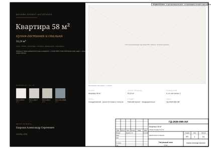
02-draftsman-general.svg — Общие данные (draftsman)
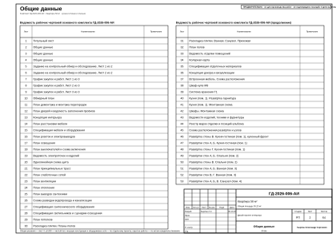
03-draftsman-general-2.svg — Общие данные (draftsman)
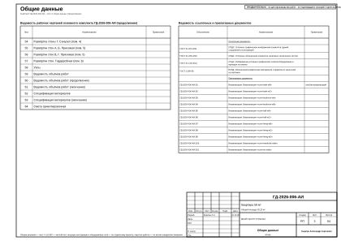
04-draftsman-general-3.svg — Общие данные (draftsman)
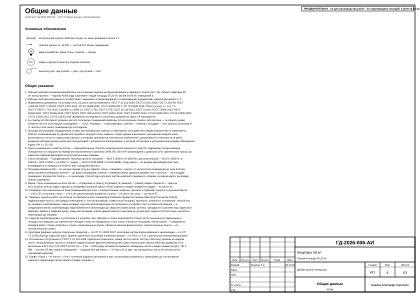
05-foreman-survey-task.svg — Задание на контрольный обмер и обследование. Лист 1 из 2 (foreman)
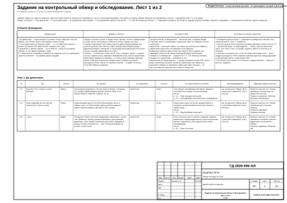
06-foreman-survey-task-2.svg — Задание на контрольный обмер и обследование. Лист 2 из 2 (foreman)
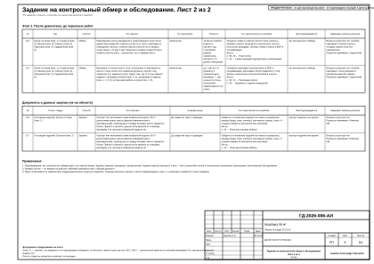
07-foreman-procurement.svg — График закупок и работ. Лист 1 из 3 (foreman)
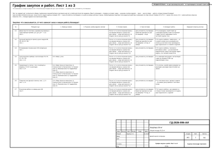
08-foreman-procurement-2.svg — График закупок и работ. Лист 2 из 3 (foreman)
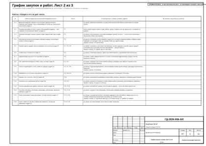
09-foreman-procurement-3.svg — График закупок и работ. Лист 3 из 3 (foreman)
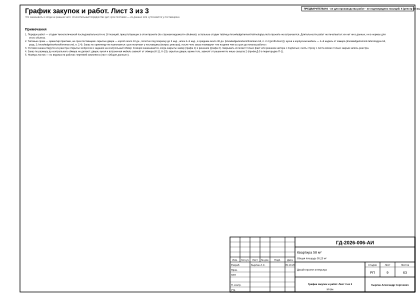
10-architect-obmer.svg — Обмерный план (architect)
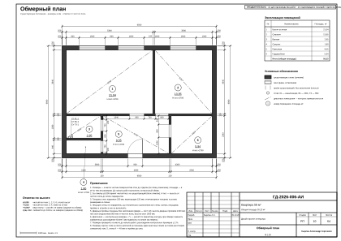
11-architect-demolition.svg — План демонтажа и монтажа перегородок (architect)
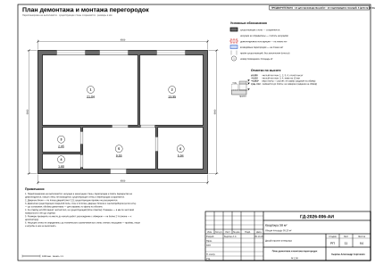
12-architect-doors.svg — План дверей и ведомость заполнения проёмов (architect)
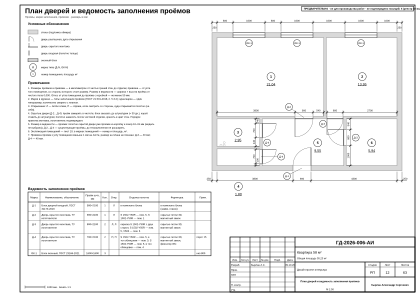
13-interior-designer-concept.svg — Концепция интерьера (interior-designer)
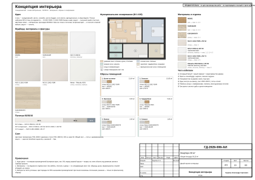
14-interior-designer-furniture.svg — План расстановки мебели (interior-designer)

15-interior-designer-spec.svg — Спецификация мебели и оборудования (interior-designer)
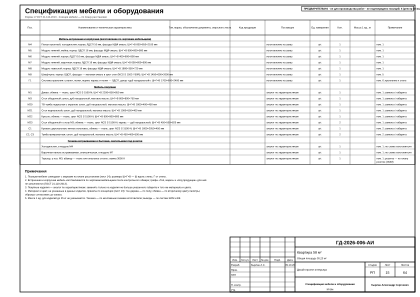
16-electrical-engineer-sockets.svg — План розеток и электровыводов (electrical-engineer)
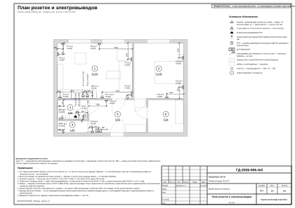
17-electrical-engineer-lighting.svg — План освещения (electrical-engineer)
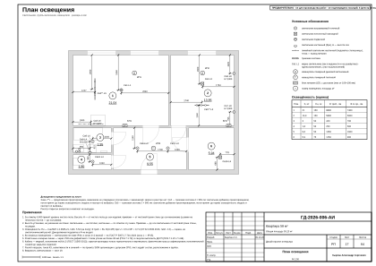
18-electrical-engineer-switches.svg — План выключателей и схема включения (electrical-engineer)
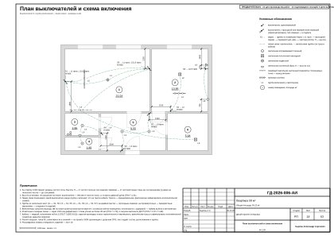
19-electrical-engineer-schedule.svg — Ведомость электроточек и изделий (electrical-engineer)
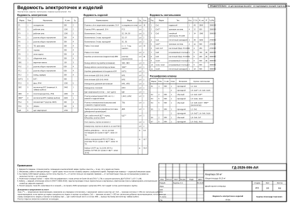
20-electrical-engineer-panel.svg — Однолинейная схема щита (electrical-engineer)
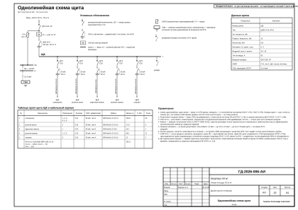
21-electrical-engineer-routing.svg — План принципиальных трасс (electrical-engineer)
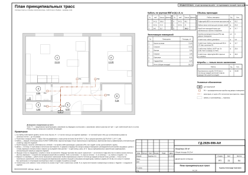
22-electrical-engineer-low-current.svg — План слаботочных сетей (electrical-engineer)
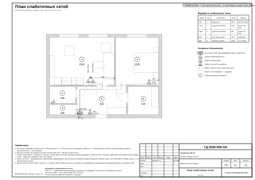
23-hvac-engineer-ventilation.svg — План вентиляции (hvac-engineer)
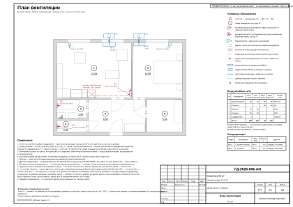
24-hvac-engineer-heating.svg — План отопления (hvac-engineer)
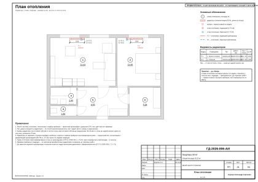
25-plumbing-engineer-vyvody.svg — План выводов сантехники (plumbing-engineer)
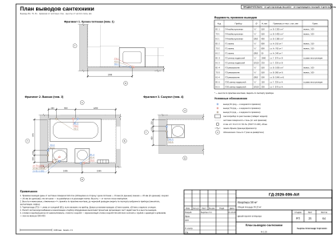
26-plumbing-engineer-razvodka.svg — Схема разводки водопровода и канализации (plumbing-engineer)
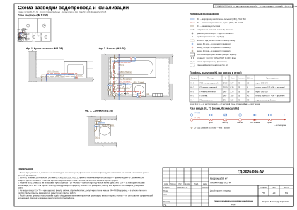
27-plumbing-engineer-spec-equipment.svg — Спецификация сантехнического оборудования (plumbing-engineer)
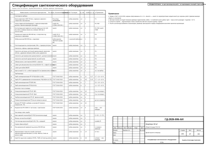
28-lighting-designer-lighting-spec.svg — Спецификация светильников и сценарии освещения (lighting-designer)
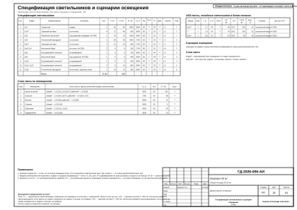
29-drywall-installer-ceiling.svg — План потолков (drywall-installer)
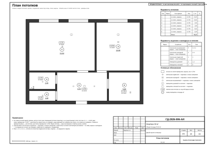
30-tiler-tile-floors.svg — Раскладка плитки. Планы полов (tiler)
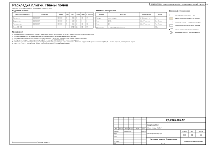
31-tiler-tile-extra.svg — Раскладка плитки. Ванная. Санузел. Прихожая (tiler)
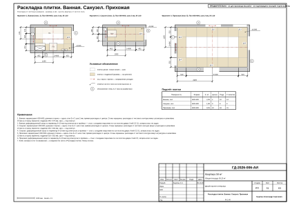
32-finisher-floors.svg — План полов (finisher)
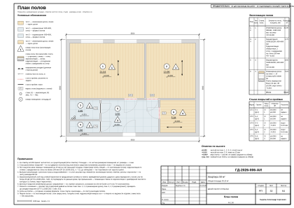
33-finisher-finish-schedule.svg — Ведомость отделки помещений (finisher)
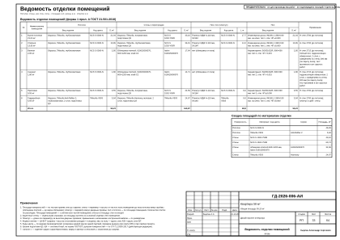
34-colorist-color-card.svg — Колерная карта (colorist)
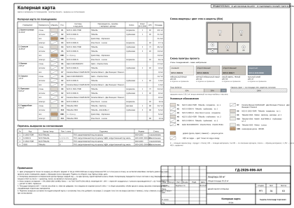
35-colorist-materials-spec.svg — Спецификация отделочных материалов (colorist)
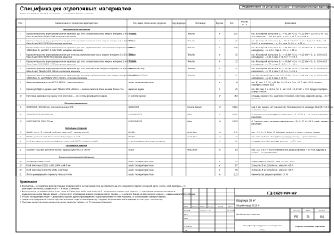
36-decorator-decor-concept.svg — Концепция декора и визуализации (decorator)
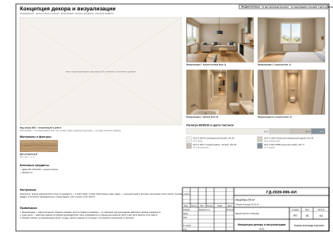
37-furniture-maker-furn-plan.svg — Встроенная мебель. Схема расположения (furniture-maker)
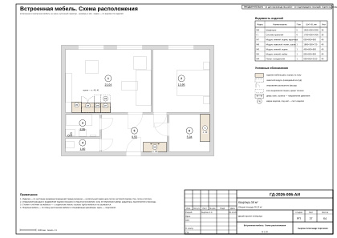
38-furniture-maker-furn-m9.svg — Шкаф-купе М9 (furniture-maker)
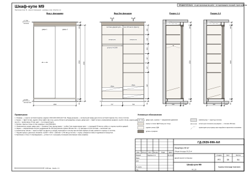
39-furniture-maker-furn-g1.svg — Система хранения Г1 (furniture-maker)
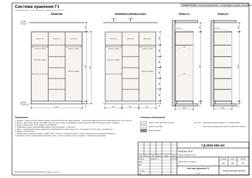
40-furniture-maker-furn-kitchen-1c.svg — Кухня (пом. 1). Развёртка гарнитура (furniture-maker)
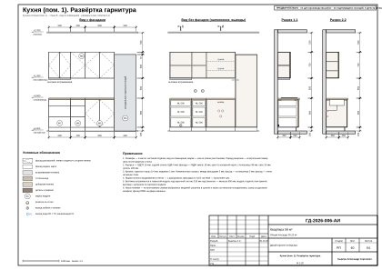
41-furniture-maker-furn-kitchen-1c-mount.svg — Кухня (пом. 1). Монтажная схема (furniture-maker)
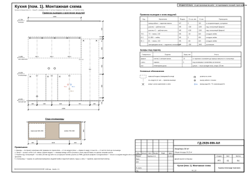
42-furniture-maker-furn-mount.svg — Шкафы. Монтажная схема (furniture-maker)
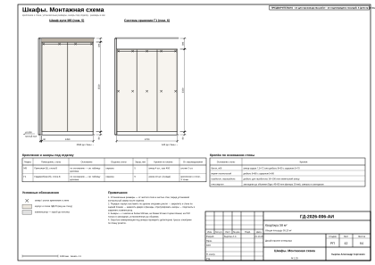
43-furniture-maker-furn-schedule.svg — Ведомости изделий, техники и фурнитуры (furniture-maker)
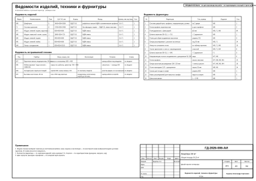
44-draftsman-registers.svg — Реестр марок отделки и позиций альбома (draftsman)
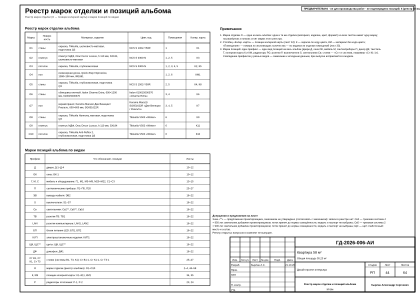
45-draftsman-elev-key.svg — Схема расположения развёрток и узлов (draftsman)
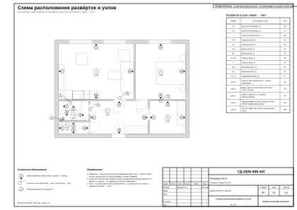
46-draftsman-elev-r1-1.svg — Развёртка стены В. Кухня-гостиная (пом. 1), кухонный фронт (draftsman)
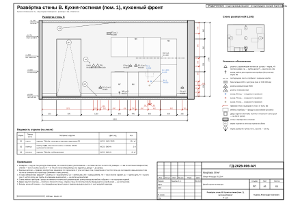
47-draftsman-elev-r1-2.svg — Развёртки стен А, Б. Кухня-гостиная (пом. 1) (draftsman)
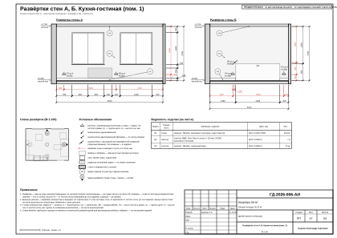
48-draftsman-elev-r1-3.svg — Развёртка стены Г. Кухня-гостиная (пом. 1) (draftsman)
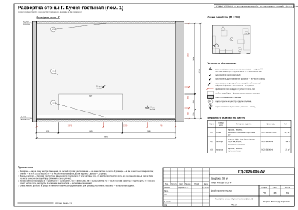
49-draftsman-elev-r2-1.svg — Развёртки стен А, Б. Спальня (пом. 2) (draftsman)
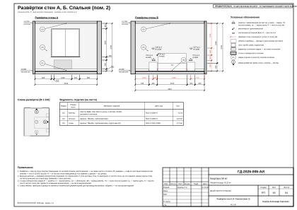
50-draftsman-elev-r2-2.svg — Развёртка стены В. Спальня (пом. 2) (draftsman)
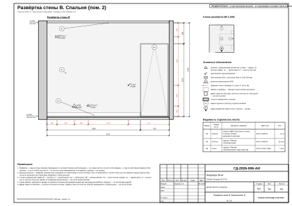
51-draftsman-elev-r3-1.svg — Развёртки стен А, Б. Ванная (пом. 3) (draftsman)
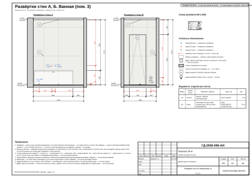
52-draftsman-elev-r3-2.svg — Развёртки стен В, Г. Ванная (пом. 3) (draftsman)
53-draftsman-elev-r4-1.svg — Развёртки стен А, Б, В. Санузел (пом. 4) (draftsman)
54-draftsman-elev-r4-2.svg — Развёртка стены Г. Санузел (пом. 4) (draftsman)
55-draftsman-elev-r5-1.svg — Развёртки стен А, Б. Прихожая (пом. 5) (draftsman)
56-draftsman-elev-r5-2.svg — Развёртки стен В, Г. Прихожая (пом. 5) (draftsman)
57-draftsman-elev-r6.svg — Развёртки стен. Гардеробная (пом. 6) (draftsman)
58-draftsman-nodes.svg — Узлы (draftsman)
59-estimator-boq.svg — Ведомость объёмов работ (estimator)
60-estimator-boq-2.svg — Ведомость объёмов работ (продолжение) (estimator)
61-estimator-boq-3.svg — Ведомость объёмов работ (окончание) (estimator)
62-estimator-spec.svg — Спецификация материалов (estimator)
63-estimator-spec-2.svg — Спецификация материалов (окончание) (estimator)
64-estimator-estimate.svg — Смета ориентировочная (estimator)